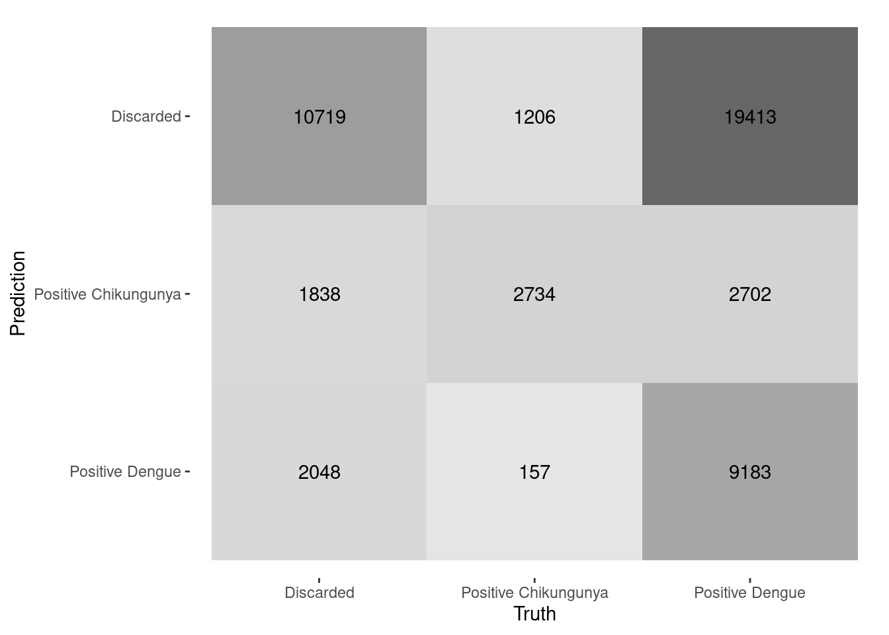

Dengue cases screening
machine learning
The case itinerary
- After a clinical assessement, a patient can be pointed as a suspected dengue/chikungunya case, based on its symptoms, clinical conditions and history (anamnesis)
- Fever, arthralgia, myalgia, headache, and retroorbital pain
- The suspected case is immediately notified to the health authorities (SINAN dataset)
- The diagnosis must be verified to adequate the health treatment
Possible case classifications
- Suspected case
- Confirmed case: dengue or chikungunya
- Discarded case
How a case is confirmed or discarded?
- On normal conditions
- Primarly by laboratory exams (blood tests)
- Nucleic acid amplification tests, serologic tests, and IgG antibody tests.
- On outbreaks
- By laboratorial test, if available
- Or by the doctor’s judgment, based on symptoms, clinical conditions and the patient history
Dengue cases diagnosis and criteria

Dengue cases diagnosis and criteria
| Diagnosis | Laboratory | Clinical |
|---|---|---|
| Positive Dengue | 3,624,320 | 6,130,030 |
| Positive Chikungunya | 300,429 | 502,977 |
| Discarded | 1,304,000 | 1,052,512 |
Research objectives
- Train a ML model to predict a patient’s diagnosis based on its symptoms and clinical conditions
- Evaluate the performance of the model for cases screening during dengue outbreaks
- Assess the human performance on diagnosis based on the trained model
Previous works
- Neto (2022) present a systematic literature review on ML and DL techniques to support clinical diagnoses of arboviral diseases.
- Current research is focused on binary classification of Dengue diagnosis.
- None of the reviewed papers were trained to predict Dengue and or Chikungunya diagnosis with Brazilian data
- Maximum number of records of 14,019 was used for training and testing ML models
Previous works
- Tabosa (2022) present a comparative study of ML techniques for multi-class classification of arboviral diseases
- Data restricted to Amazonas and the city of Recife, Pernambuco, from 2015 to 2020.
- Gradient-boosting learners offered the best performance
- No learner achieved an accuracy above 70%
Previous works
- Bohm (2024) present a model for binary classification with 98% accuracy
- Data restricted to Rio de Janeiro and Minas Gerais states
- Sample of 20,000 records
- Possible discrepancies between paper methodology and available data from author
Study design
- Create two datasets: \(D_a\) with cases that received diagnosis from laboratorial exams, and \(D_b\) containing only cases diagnosed solely on symptoms and clinical conditions
- Train different ML learners on \(D_a\) based on the patient’s symptoms and clinical conditions
- Model evaluation
- Apply the selected model on \(D_b\)
- Compare the results
Preliminary results
- \(D_a\) with 50,000 ramdom samples for each class: positive Dengue, positive Chikungunya, and discarded cases
- Training dataset with 3/4 proportion, 5 folds
- Learners: XG-Boosting, Random Forest, KNN, MLP, Logistic Regression, and Regularized Discriminant Analysis (RDA) model
- Three cumulative model especifications: symptoms and clinical conditions, weather season and geographical region (state)
Best model, so far
- Complete model especification
- XG-Boost learner
- 64,28% accurracy
- 64,28% sensibility
- 82,14% specificity
- 81,73% ROC AUC
Confusion matrix
Truth
Prediction Discarded Positive Chikungunya Positive Dengue
Discarded 5440 1177 2415
Positive Chikungunya 2788 9942 1362
Positive Dengue 4272 1381 8723Human vs machine

Thoughts
- Sensitivity: ability to designate an individual with disease as positive
- Specificity: ability to designate an individual who does not have a disease as negative
- For cases screening, a high specificity is desired: ruled-in cases can be directed to laboratory diagnosis for confirmation
Strenghts of the paper, so far
- Country-wide representative sample
- Relatively high specificity model
- More realistic discussion on ML models for cases screening
- New discussion on human performance